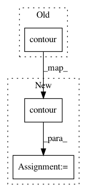

b32d13a9e3c681028143919f470101cdcad64545,doc/source/notebooks/basics/classification.pct.py,,,#,194
Before Change
plt.plot(X[mask, 0], X[mask, 1], "oC0", mew=0, alpha=0.5)
plt.plot(X[np.logical_not(mask), 0], X[np.logical_not(mask), 1], "oC1", mew=0, alpha=0.5);
plt.contour(xx, yy, p.numpy().reshape(*xx.shape), [0.5], // plot the p=0.5 contour line only
colors="k", linewidths=1.8, zorder=100);
// %% [markdown]
// //// Further reading
After Change
plt.plot(X[mask, 0], X[mask, 1], "oC0", mew=0, alpha=0.5)
_ = plt.plot(X[np.logical_not(mask), 0], X[np.logical_not(mask), 1], "oC1", mew=0, alpha=0.5)
_ = plt.contour(
xx,
yy,
p.numpy().reshape(*xx.shape),
[0.5], // plot the p=0.5 contour line only
colors="k",
linewidths=1.8,
zorder=100,
)
// %% [markdown]
// //// Further reading
//
In pattern: SUPERPATTERN
Frequency: 3
Non-data size: 3
Instances
Project Name: GPflow/GPflow
Commit Name: b32d13a9e3c681028143919f470101cdcad64545
Time: 2020-03-22
Author: art.art.v@gmail.com
File Name: doc/source/notebooks/basics/classification.pct.py
Class Name:
Method Name:
Project Name: astroML/astroML
Commit Name: 582670eb0b8b0bcd44b5574733b141757452e1fa
Time: 2014-01-30
Author: vanderplas@astro.washington.edu
File Name: astroML/plotting/scatter_contour.py
Class Name:
Method Name: scatter_contour
Project Name: markovmodel/PyEMMA
Commit Name: 0ca24325cd6aa9b8d9d0ddb56c8a3a38c06ecc56
Time: 2018-06-20
Author: christoph.wehmeyer@fu-berlin.de
File Name: pyemma/plots/tests/test_plots2d.py
Class Name: TestPlots2d
Method Name: test_contour